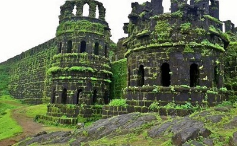
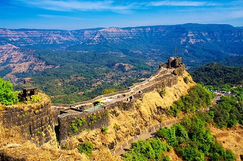
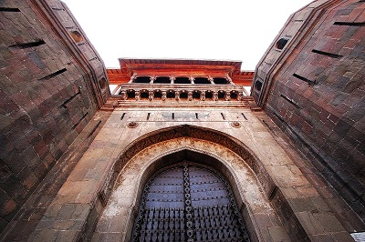

The Marathas
The Maratha Empire and later the Maratha Confederacy dominated a
large portion of the Indian subcontinent in the 18th century.
The empire formally existed from 1674 with the coronation of
Shivaji as the Chhatrapati and ended in 1818 with the defeat of
Peshwa Bajirao II at the hands of the British East India
Company.
Shivaji (1674-80)
-
Shivaji was born in 1630 in the hill-fort of Shivneri, near
the city of Junnar in what is now Pune district.
-
He belonged to the Bhonsle Clan of Marathas. Shivaji’s father
Shahji Bhonsle was a military commander under Deccan
Sultanates (Nizamshahi of Ahmadnagar and Adilshahi of Bijapur)
and was given jagir of Pune. His mother was Jijabhai .
-
He started his career as an young prince at Poona after
inheriting the jagir of Poona from his father in 1937.
-
He created an independent Maratha kingdom with
Raigad (Maharashtra) as its capital where he built the
Raigad Fort.
-
In c.1664 CE, Shivaji sacked the rich port of Surat.
This plundering of Surat, an important Mughal trading city,
enraged Aurangzeb and he sent Raja Jai Singh of Amber and
Diler Khan to destroy the Maratha power. Shivaji opened
negotiations with Jai Singh and the
Treaty of Purander was signed in c.1665 CE by which he
surrendered some forts.
-
It is believed that, in c.1665 CE, Shivaji visited Agra with
his son but were humiliated by Aurangzeb who put them under
house arrest. Shivaji escaped along with his son .
-
He defeated Mughals in the Battle of Salher (c.1672
CE). This battle is considered particularly significant as it
is the first battle in which the Mughal Empire lost to the
Marathas.
-
He was crowned as Chhatrapati (sovereign) of the new
Maratha kingdom in 1674.
-
Towards end of c.1676 CE, Shivaji launched a wave of conquests
in southern India’s Carnatic region and captured the forts of
Vellore and Ginjee , which served as the
Maratha’s capital for nine years.
-
He died due to fever in c.1680 CE, at the age of 53, after
ruling for only six years. In this short time he founded the
Maratha kingdom, which dominated western India for a century
and a half.
-
Shivaji promoted Sanskrit, but
respected all religions and opposed forced conversion.
Marathas After Shivaji
Shivaji had two sons: Sambhaji and Rajaram, who had different
mothers and were half-brothers.
Sambhaji (1681-89)
-
In 1681, Sambhaji succeeded to the crown after his father's
death and resumed his expansionist policies.
-
In 1681, Prince Akbar, the rebellious son of Aurangzeb
took shelter with him. Which prompted Aurangzeb heading south
in 1681.
-
During the eight years that followed, Sambhaji led the
Marathas, never losing any of the battles or forts to
Aurangzeb.
-
On 1 February 1689, Sambhaji was ambushed and captured by the
Mughal troops. He was executed by the Mughals on 21 March
1689.
-
The infant son of Sambhaji,
Shahu, was taken captive by Aurangzeb. Sambhaji was
succeeded by his half-brother Rajaram in 1689.
Rajaram (1689-1700)
-
His eleven-year reign was marked with a constant struggle
against the Mughals.
-
He died of lung disease in 1700 at Sinhagad near Pune. His
widow
Tarabai put her infant son, Shivaji II, on the
throne and ruled as his regent.
Shahu (c.1707–1749 CE)
-
After Aurangzeb’s death in 1707, Shahu, the grandson of
Shivaji and son of Sambhaji was released by Bahadur Shah I,
the new Mughal emperor.
-
He claimed the throne and this led to a civil war between
Shahu and Tarabai.
-
Shahu emerged victorious in the Battle of Khed, with
the help of
Balaji Vishwanath.
-
After this, Shahu ruled from Satara and
Tarabai from Kolhapur.
-
From now onwards, the rule of Peshwa (Prime ministers)
started. They became de facto rulers of the Maratha empire.
The Peshwas (AD 1713–1818)
Balaji Viswanath (1713–1720)
-
He excelled in diplomacy and won over many Maratha chiefs to
the side of Shahu. He made the Peshwa post as the functional
head of the Maratha empire.
-
He helped Sayyid brothers in over throwing the Mughal emperor
(Farrukhsiyar).
Baji Rao I (1720-1740)
-
He was a bold and brilliant commander and was considered the
greatest expert in guerilla tactics after Shivaji. Maratha
power reached its zenith under him.
-
The Marathas defeated the Nizam in 1728. The battle is
considered an example of brilliant execution of military
strategy.
-
Under his leadership, the Marathas compelled the Mughals first
to give them the right to collect chauth of the vast
areas and then to cede those areas to the Maratha kingdom.
Balaji Baji Rao (Nana Sahib) (1740-1761)
-
In an agreement with the Mughal emperor (Ahmed Shah), the
Peshwa agreed to protect the Mughal empire from internal and
external enemies in return for the chauth.
-
In the Third Battle of Panipat in 1761, between Maratha
and Ahmed Shah Abdali, Viswas Rao, the son of Nana
Sahib died.
Peshwa Madhav Rao I (1761-1772)
-
Balaji Baji Rao was succeded by his younger son Madhav Rao I.
-
After the death of Madhav Rao,
Peshwaship had lost all its power. The Maratha Empire
became a confederacy of many semi-autonomous Maratha states.
The Marathas remained a major power in India until their defeat
in the
Second and Third Anglo-Maratha Wars
(1805–1818), which resulted in the East India Company
controlling most of India.
Maratha Administration
-
The Marathas used a secular policy of administration and
allowed complete freedom of religion.
-
Several majestic palaces were built by Maratha principalities
which include the Shaniwar Wada (built by the Peshwas of Pune)
and forts suchs as Pratapgad fort, Raigad Fort etc
commissioned by Shivaji.

Raigad Fort
Raigad, Maharashtra.

Pratapgad Fort
Satara district, Maharashtra.

Shaniwar Wada
Pune, Maharashtra.
Administrative Posts of Marathas
| Post |
Duty |
| Peshwa - Pant Pradhan |
Initially- finance and general administration, later
Prime Minister.
|
| Ashtapradhan |
council of ministers |
| Amatya/Majumdar |
Finance Minister |
| Sachiv |
General Secretary |
| Nyayadish |
Chief Justice |
| Senapati |
Military commander |
| Sumant |
Foreign Minister |
Administrative Units and Heads
| Units |
Head |
| Prants (Province) |
Subedar(Governor) |
| Tarfs (Districts) |
Havaldhar(Administration) |
| Paraganas (Sub-Districts) |
Deshpande (Accounts) and Deshmukh (Administration)
|
| Mauzas (Village) |
Kulkarni (Account) and Patil (Administration) |
Marathas Revenue Administration
-
Chauth was one-fourth of the land revenue paid
to the Marathas so as not to be subjected to Maratha’s raid.
-
Sardeshmukhi was an additional levy of
10 per cent (1/10th) on those lands of Maharashtra,
over which the Marathas claimed hereditary right, but which
formed part of the Mughal empire.